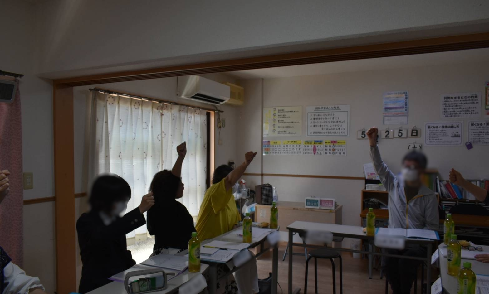
創設会（2024/5/25）
5月25日に未来キッズアカデミーの創設会を開きました．
これまでの活動の様子を写真付きで紹介します。

5月25日に未来キッズアカデミーの創設会を開きました．
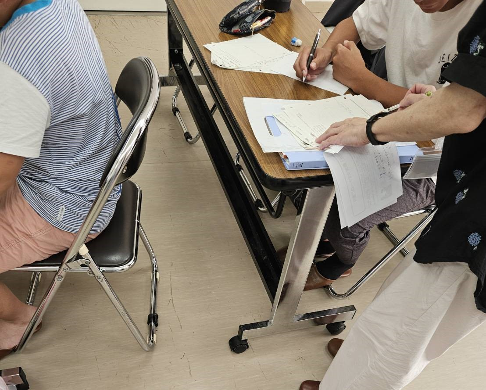
13時から16時まで，飛高会館にて学習支援を行いました．
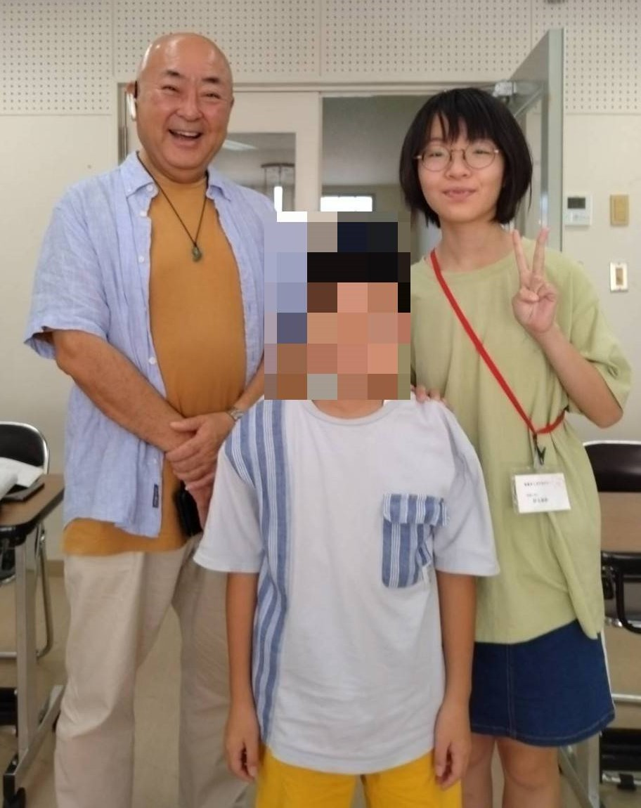
代表の想いをしっかりと聞いてくださり，色々と話をしてくださいました．
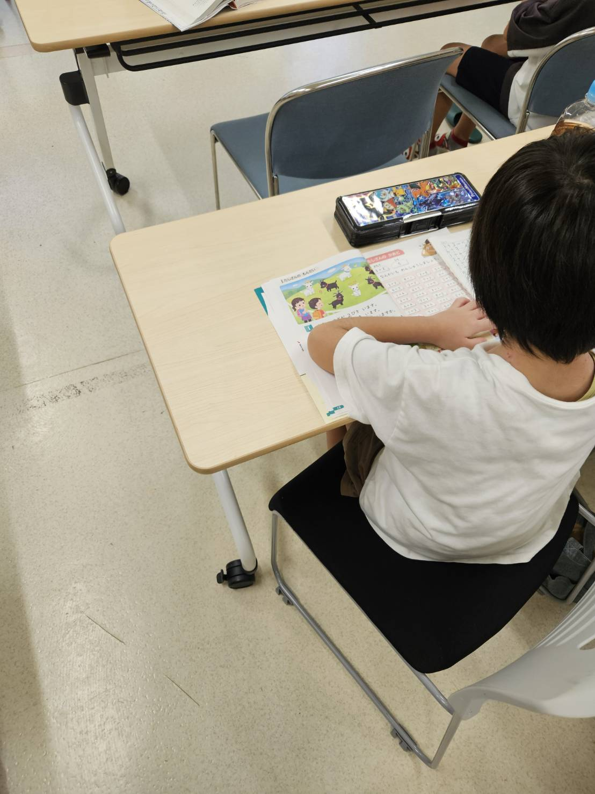
2日間で9名のお子さんが参加し，夏休みの宿題や苦手分野を学習しました．
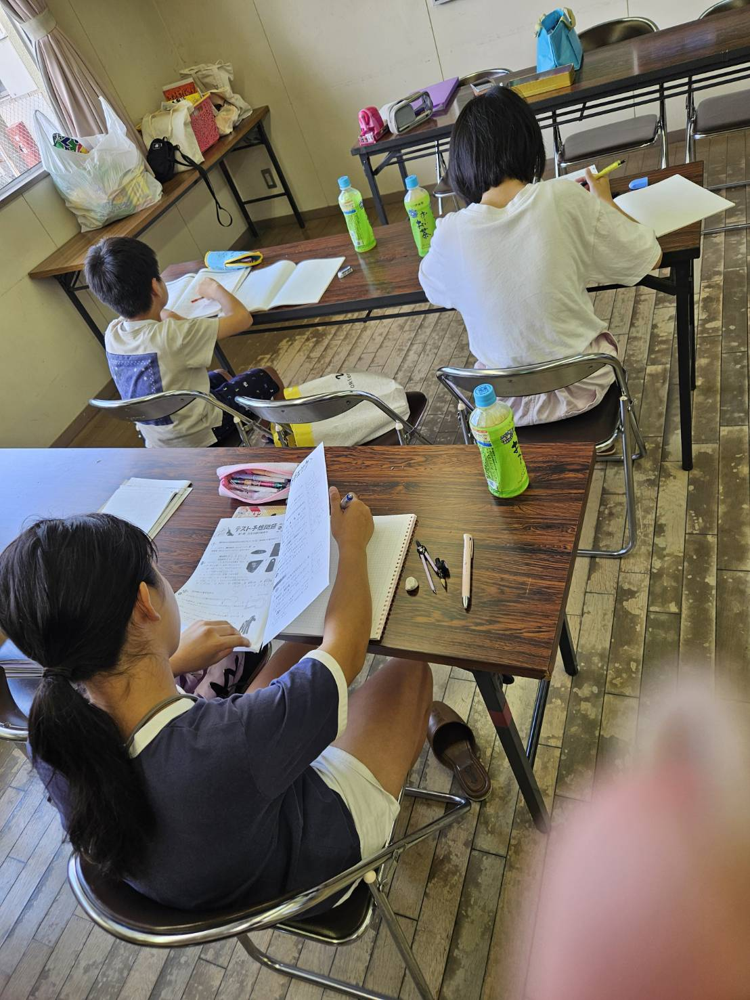
宮田学供にて学習支援を行いました．
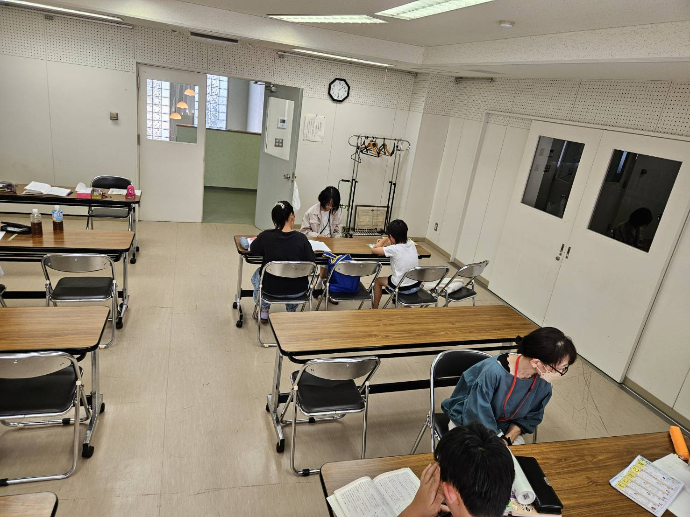
飛高会館にて学習支援を行いました．
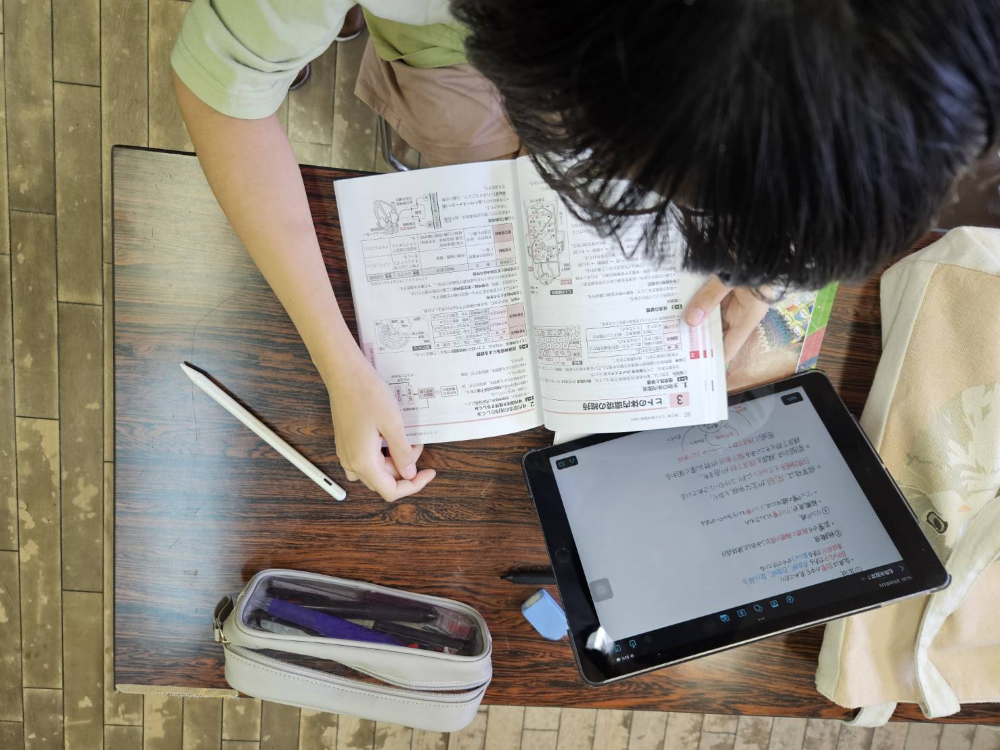
宮田学供にて学習支援を行いました．
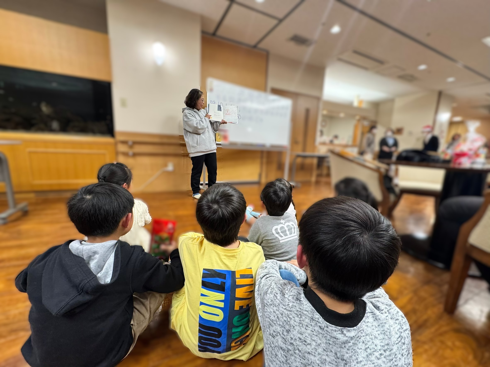
読み聞かせ会を行いました．
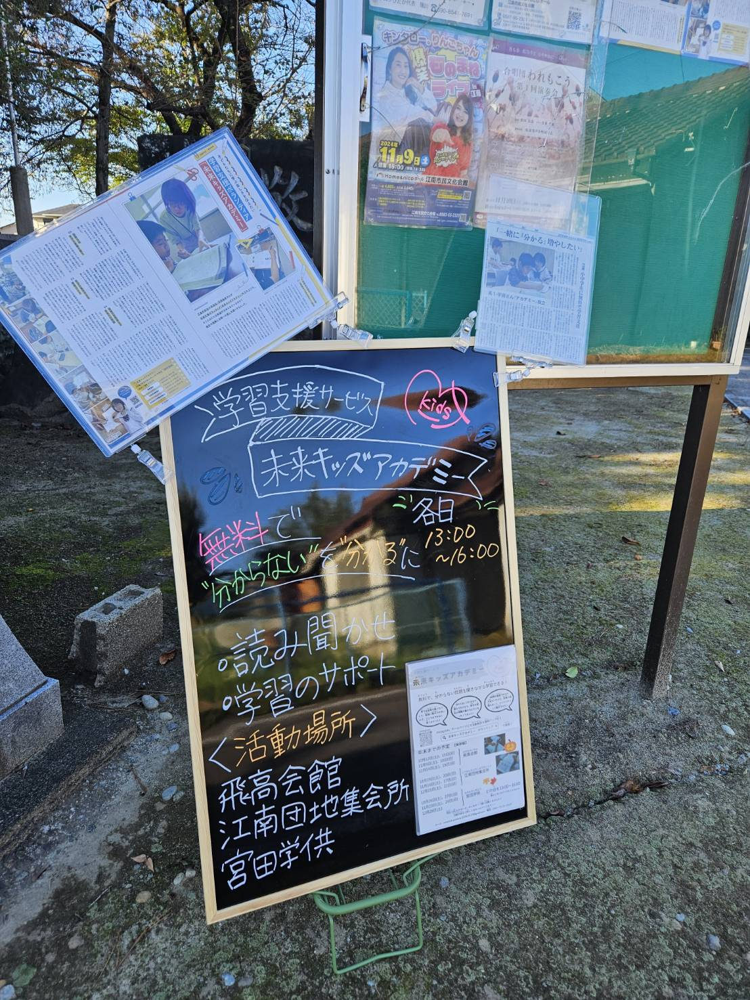
飛高会館にて学習支援を行いました．
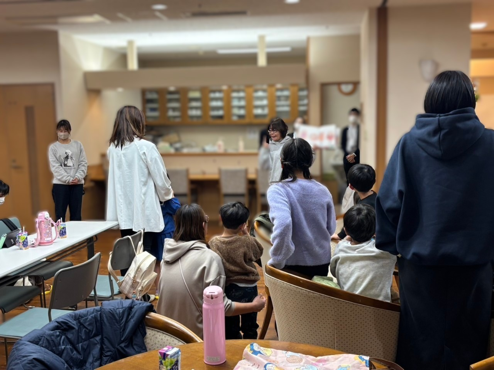
読み聞かせ会を行いました．
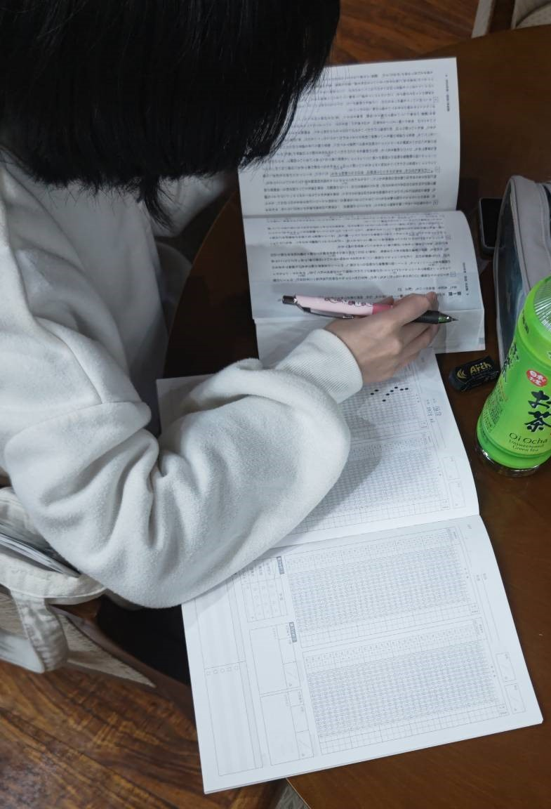
第2ジョイフル江南にて学習支援を行いました．
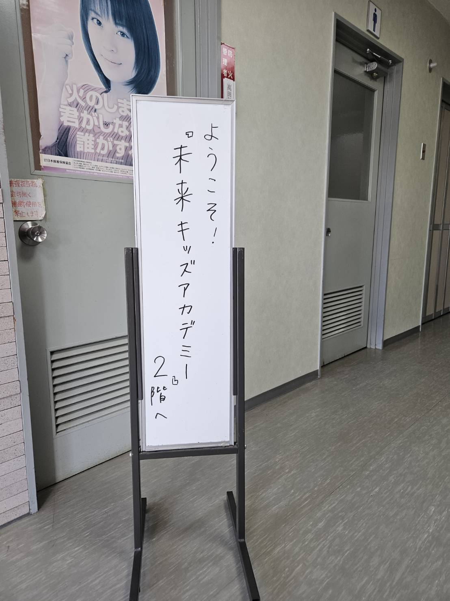
飛高会館にて学習支援を行いました．
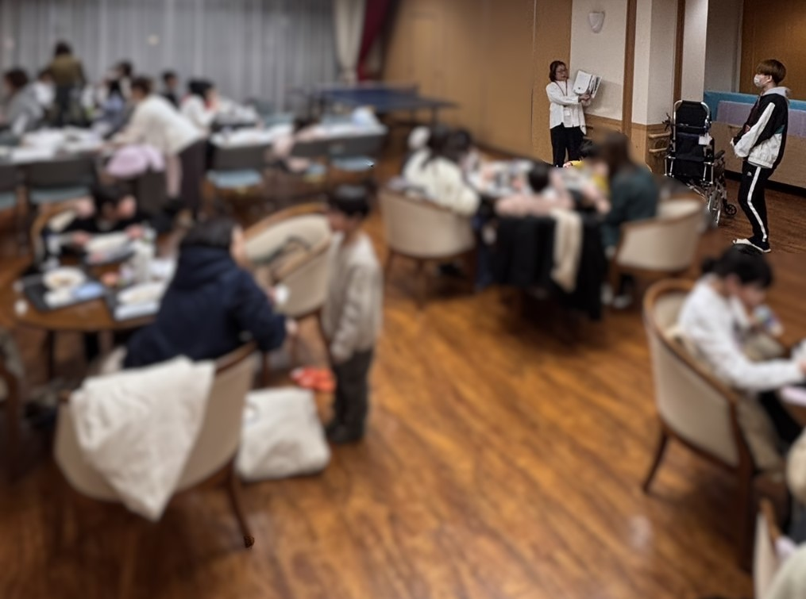
読み聞かせ会を行いました．
5/10(土)・11(日)：計16名
5/17(土)・18(日)：計5名
5/24(土)・25(日)：計7名
5/10(土)・11(日)は，中学1年生の方たちが単元テストの勉強に取り組んでいました．